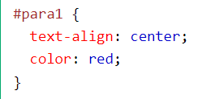
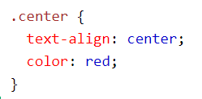

Для чого використовуються?
CSS селектори використовуються для "пошуку" (або вибору) HTML-елементів, які ви хочете стилізувати. Можна розділити CSS селектори на п’ять категорій: Прості селектори (вибір елементів на основі імені, ідентифікатору, класу) Комбінаторні селектори (вибір елементів на основі визначених відношень між ними) Селектори псевдокласів (вибір елементів на основі визначеного стану) Селектори псевдоелементів (вибір і стилізація частини елемента) Селектори атрибутів (вибір елементів на основі атрибуту або значення атрибуту) На цій сторінці пояснюються прості селектори CSS.
CSS селектор елемента
Селектор елементів обирає HTML елементи на основі імені елемента.
Приклад
Тут всі елементи p на сторінці будуть вирівняні по центру з червоним кольором тексту:
CSS селектор id
Селектор id використовує атрибут id HTML елемента для вибору визначеного елемента. Ідентифікатор (id) елементу є унікальним на сторінці, тому селектор id використовується для вибору одного унікального елемента! Щоб обрати елемент з визначеним ідентифікатором, напишіть символ хешу (#), а потім id елемента.
Приклад
Наведене нижче правило CSS буде застосовано до елементу HTML з id="para1":
Примітка: Ім’я класу не може починатися з цифри!
CSS селектор class
Селектор class обирає HTML елементи з визначеним атрибутом класу. Щоб обрати елементи з визначеним класом, введіть символ крапки (.), а потім ім’я класу.
Приклад
В цьому прикладі всі HTML елементи з class="center" будуть червоними та вирівняні по центру:
Ви також можете вказати, що клас має зачіпати лише визначені HTML елементи.
Приклад
В цьому прикладі лише елементи p з class="center" будуть вирівняні по центру:
Універсальний CSS селектор
Універсальний селектор (*) виділяє всі елементи HTML на сторінці.
Приклад
Наведене нижче правило CSS впливає на кожен HTML елемент на сторінці: